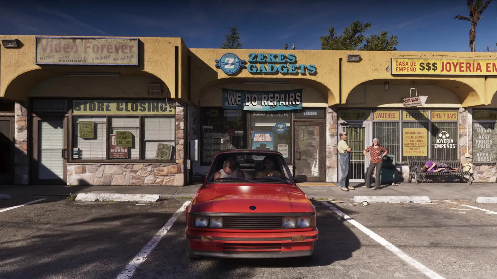
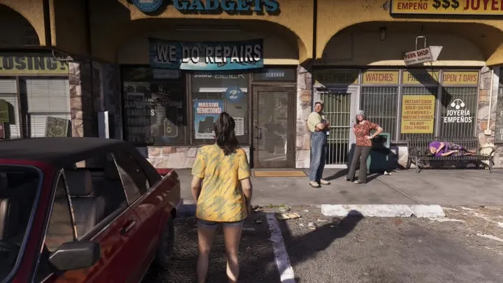

Колесо предметов и багажник в GTA 6
Обновлено:

Снаряжение в GTA 6 выбирается в отдельном меню с вкладками «Оружие» и «Предметы» — это видно в «Расширенном показе».
- Вкладки WEAPONS / ITEMS.
- Rod’s Racing Cap — Headwear.
- Очки — OFF.
Подробно
На 17:50 «Расширенного показа» поверх размытого кадра появляется меню с вкладками WEAPONS и ITEMS. В оружии выбрано Unarmed (слот Sidearm), в предметах — Rod’s Racing Cap (головной убор) и солнцезащитные очки (OFF). Вверху — деньги: $15 150 и $700.
Значит, кепка и очки — отдельные предметы, которые можно надеть или снять на ходу.
Кадры

Где посмотреть
Таймкоды — чтобы найти момент в официальном видео Rockstar.
| Где | Что в кадре |
|---|---|
| «Расширенный показ», 17:50 | Меню WEAPONS / ITEMS |
| «Расширенный показ», 17:54 | Выход из машины после выбора снаряжения |
По данным превью
Это рассказали журналисты, которые видели игру до релиза. Rockstar официально подробности не подтверждала.
С собой — ограниченный набор: основное, дополнительное и метательное оружие, бинокль. Остальное лежит в багажнике машины или в убежище.
Sole Retriever
Бандана, очки, кепка и быстрая смена одежды — через отдельное колесо. Полиция запоминает лицо и одежду, так что маска и переодевание — тактика.
Engadget
На этой странице также: Колесо предметов (Механики).
Кадры и названия: Rockstar Games — трейлеры GTA VI, «Расширенный показ» (An Extended Look), официальные скриншоты. После релиза 19 ноября 2026 года дополним страницу данными из игры.
Каждый день — одно сравнение: кадр игры рядом с реальным фото. Подписывайтесь:
YouTubeInstagramTikTok